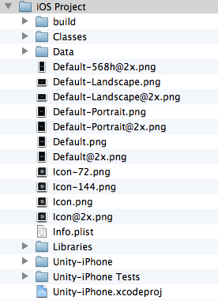
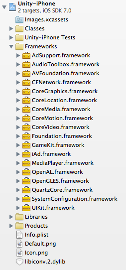

Structure of a Unity XCode Project
When you build a project for the iOS platform, Unity will create a folder that contains an XCode project. This project is required to compile and sign your app before deploying on devices, and it allows you to prepare and bundle your game for distribution on the App Store.

Before building the iOS project make sure that you set the Bundle Identifier in Player settings. You may also choose the SDK version to run the game on the device or simulator.
Classes folder
This contains code that integrates the Unity Runtime and Objective-C. The contained files main.mm and UnityAppController.mm/h are the entry point of the application, and you can create your own AppDelegate, derived from UnityAppController. If you have plugins including AppController.h you can simply include UnityAppController.h instead. If you have AppController.mm/h in Plugins/iOS folders you can merge and rename them.
Also the InternalProfiler.h file defines a compiler conditional to enable the Internal Profiler. This is a folder for code that doesn't change often, and you can place your custom classes here. The changes to this folder are preserved between builds when the append mode is selected, but this function doesn't support multiple build targets and requires a fixed structure of the Libraries folder.
The Internal Profiler is fast and unobtrusive, and feeds basic information:
- which subsystem is taking most of the frame time,
- .NET heap size,
- GC event count/duration. See built-in profiler for further information.
Data folder
This contains the serialized game assets, and .NET assemblies (dll or dat files) as full code (or metadata if stripping is on). The machine.config file is the setup for various .NET services such as security, WebRequest, and more. The content of this folder is refreshed with each build, and you should not modify it.
Libraries folder
This contains the .NET assemblies translated into ARM assembler (s files) or libil2cpp.a if the project was built using IL2CPP. The libiPhone-lib.a file is the Unity Runtime static library, and RegisterMonoModules.cpp binds Unity native code with .NET. The content of this folder is refreshed with each build, and you should not modify it.
Other newly created custom folders
Your custom files can be placed here.
Graphic files
Icons and splash screens (png files) are kept in asset catalogs found in the Unity-iPhone folder. These files are automatically managed by Unity. Launch Screens, their XML Interface Builders (xib files) and Storyboard files are stored in the project’s root folder. You can set them up in Player settings. When creating custom launch images, make sure you adhere to Apple's Human Interface Guidelines.
Property List file
The Info.plist is managed via Player settings in Unity. This file is updated when building the player, instead of being replaced. You should not modify it unless it is really needed.
Other files
These include the XCode Project file (xcodeproj file), and framework links that are only shown in the Project Navigator.
